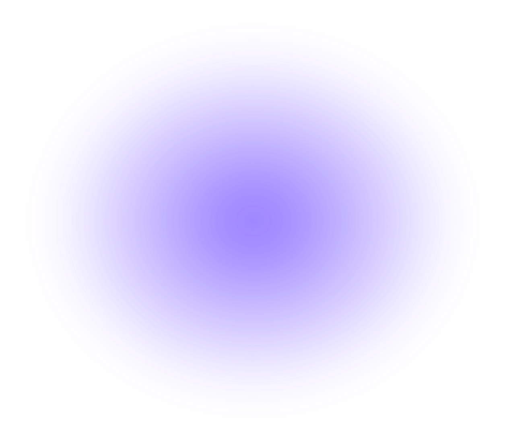
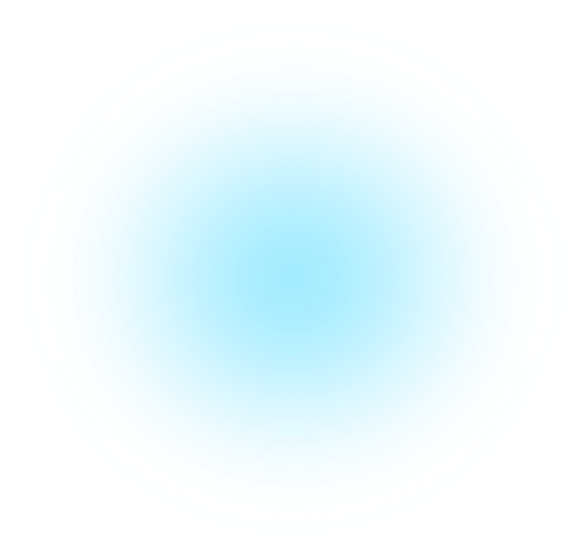
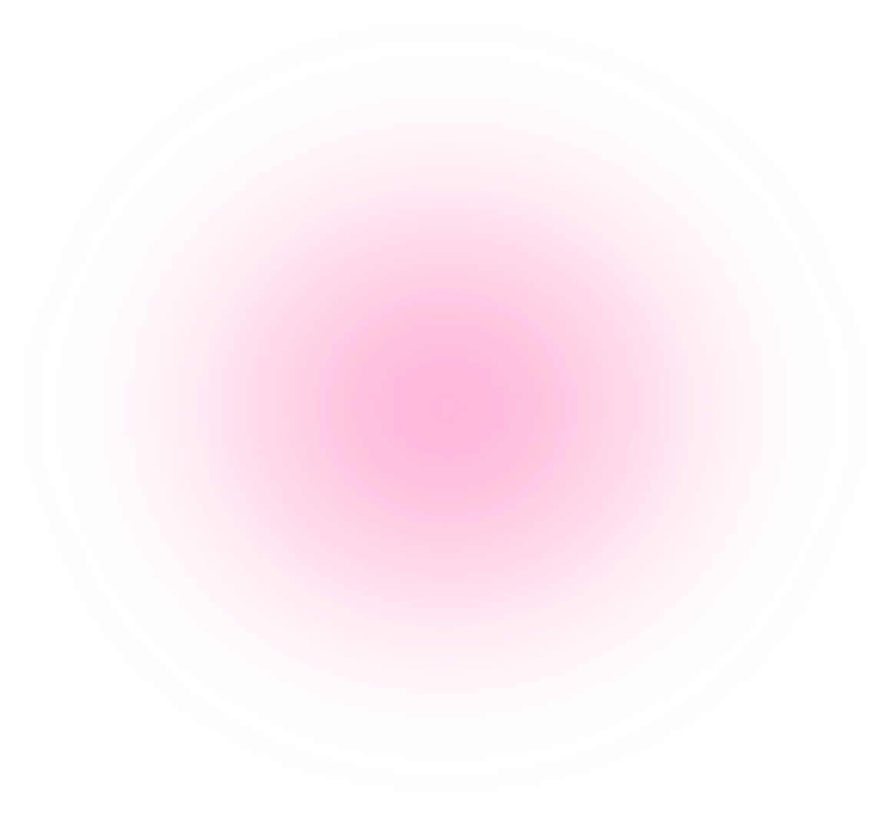
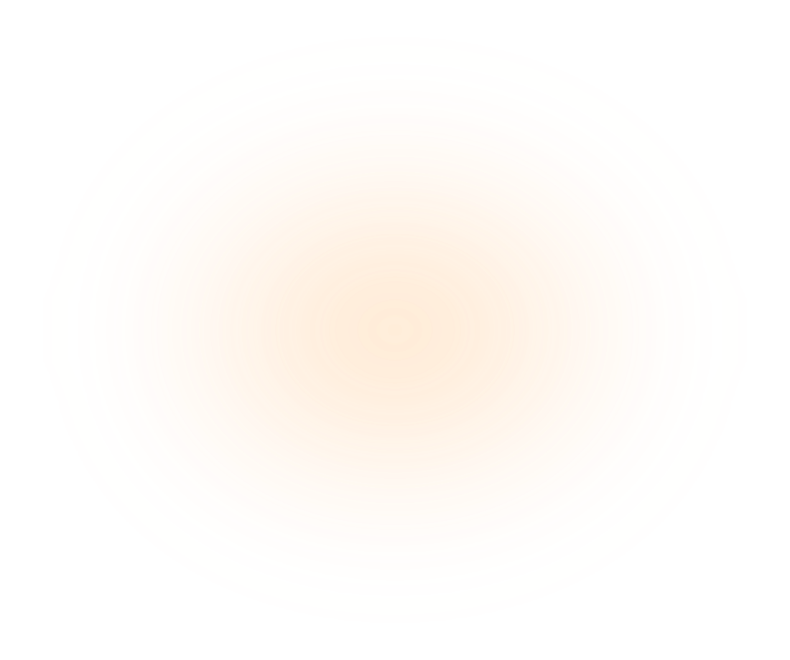
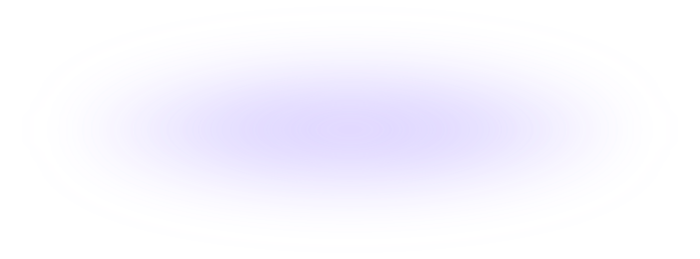
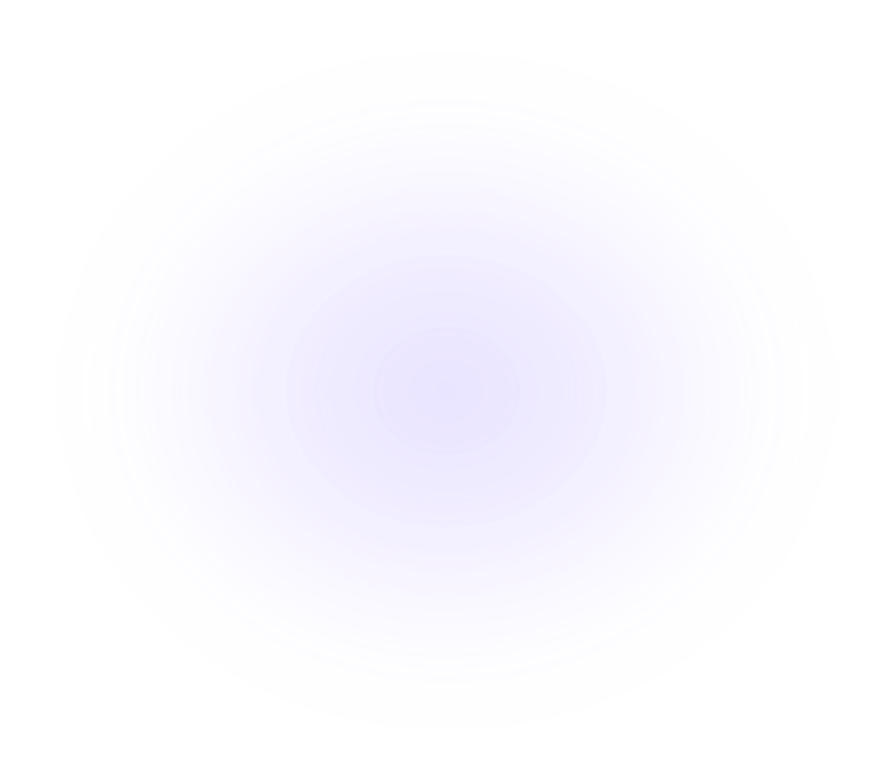
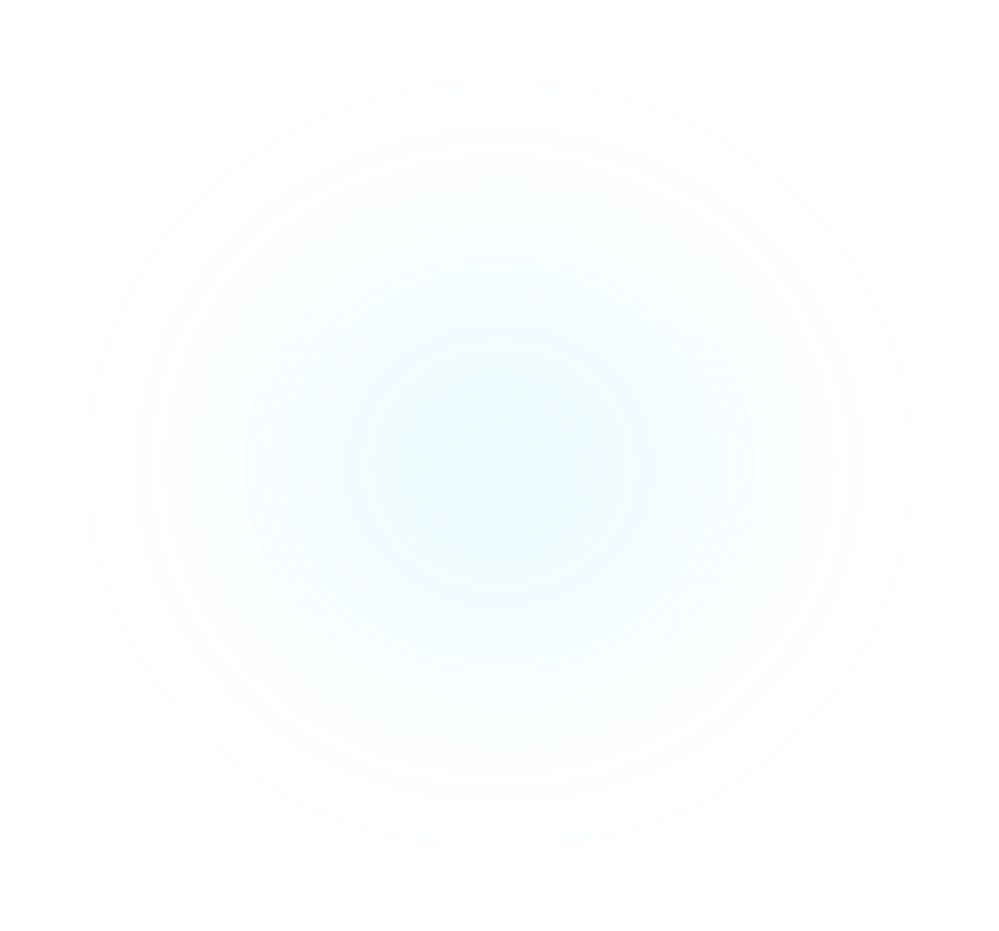
Low-latency remote access for macOS, Windows, and Linux.
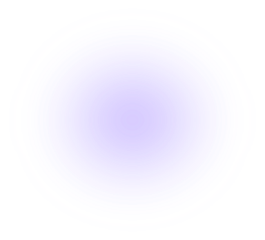
PRISM streams your desktop to any other device you own — with latency low enough that you stop noticing it’s remote.
PRISM needs these to capture and control this machine.
Nothing is sent outside
your own network.
You can change these later in Settings → Privacy.
Install PRISM on the machine you want to reach, then type the six characters it shows on screen.
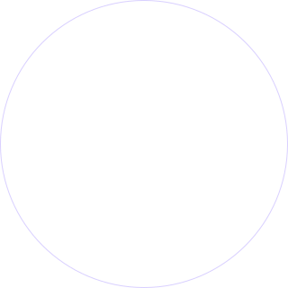
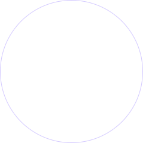
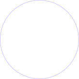
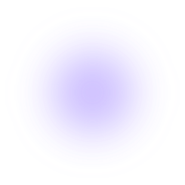
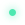
Connected